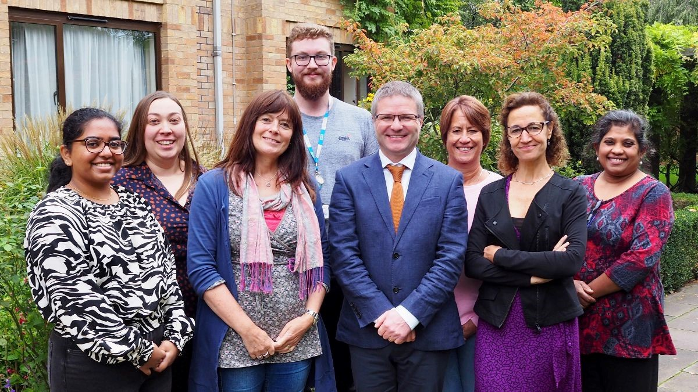

News
CUH Awards Nomination!
Congratulations to the ACED Clinical Research Team who have been nominated for a 2023 Cambridge University Hospitals (CUH) Annual Award in the category of 'Together' - promoting teamwork, collaboration and inclusion. The shortlist will be announced in July, good luck to the team!
Celebrating 200 Participants
In April 2023, the ACED Clinical Research Team welcomed the 200th participant into the ACED Cohort!
We spoke to Cornelius about his experience of joining the cohort:
"I found out about the ACED Cohort from my partner who was very positive about the experience. It's a great way to help with cancer research so I decided to sign up.
"My first appointment went really well, it was a very relaxed atmosphere and I enjoyed the experience, particularly the laptop puzzles!
"The whole process was explained thoroughly and I was told how my samples would be processed and stored. It's great to know that my data and samples can be used for cancer research studies, and that by coming back each year they can build up a really valuable resource.
"I was surprised but very happy to be the 200th participant, it's great to know you've had so many volunteers! I'd really encourage others to take part as it's nothing to worry about, it's an interesting way to spend a couple of hours and it's also good to have a mini MOT!"
Annual Appointments
As of June 2023, we are delighted to have 99% of our cohort returning for their annual appointments. The longitudinal nature of the project is what makes it such a valuable resource so we are very grateful to everyone for coming back!
A reminder that those who joined the ACED Cohort in July and August 2022 will shortly be contacted about booking their annual appointment. Please bear with us as we work through the list.
International Nurses Day
On International Nurses' Day, 12th May 2023, CRUK Cambridge Centre interviewed Graham Kibble, a research nurse in the ACED Clinical Research Team. The article highlights the valuable contribution of our research nurses and the importance of continued professional development in their career. Read the interview to find out more about Graham and his role: Spotlight on ACED Research Nurse Graham Kibble
Team News
Goodbye to Irene Debiram-Beecham, who is moving on from her role as Principal Research Nurse for the ACED Team to coordinate a £6.4m trial for the 'Cytosponge', a screening device for detecting 'Barrett’s Oesophagus'. Thanks to Irene for her passion and dedication over the years, we wish her all the best. Congratulations to Alice Groves who has been appointed as the new ACED Principal Research Nurse. Alice has been a key member of the team for three years and will continue to coordinate the ACED Cohort study.
One-year Anniversary
On the 23rd of November 2022, it was the one-year anniversary of the Cohort receiving its first participant. Therefore, those who joined the ACED Cohort in November / December 2021 and January 2022 will shortly be contacted about booking their annual appointment. Please bear with us as we work through the list.
ACED Cohort celebrates its 100th Participant
The ACED Clinical Research Team is very proud to announce that there are now over 100 participants in the ACED Cohort. In October 2022, the team welcomed Howard into the ACED Cohort. He said: "I'm happy to be helping and I'm proud of the 99 people before me who have led the way. It is great the ACED Cohort has reached this number so quickly, it shows how many people recognise how important this is.
To encourage others to join, I'd say it's a really easy way to help with something which could revolutionise cancer diagnosis and save many people a lot of pain, stress and sadness. You will be made to feel welcome and comfortable throughout."
Meet the Team
We're delighted to introduce some of the newest members of the ACED Clinical Research team, so you can find out a bit more about what happens behind the scenes:
Adam Palmer - Data Manager
"Hi there! My name is Adam and I’m the Data Manager here at the ACED Clinic site. As the Data Manager it is my responsibility to ensure that all the information we collect from you in your time on the trial, is collected accurately and kept safe. I create and maintain all the database and electronic questionnaires we use, as well as our website.
Rosemary Felix - Research Lab Technician
"I process and store all the samples taken for the ACED Cohort. Your samples are kept frozen until they are requested for a scientific study and I make sure that they are kept in great condition to be used. I also keep track of all movements of samples whether they’re in our storage or sent out to researchers."

The ACED Clinical Research Team. Left-right: Rosemary, Alice, Sarah, Adam, Graham, Tracy, Ines, Irene
First Participant Joins the ACED Cohort
In November 2021, the ACED Clinic Cambridge team welcomed the first participant into the ACED Cohort! In an hour-long appointment at the Cambridge Clinical Research Centre, the willing volunteer completed a questionnaire and provided a blood and urine sample, and we very much appreciate their contribution to cancer early detection research. The team are still looking for hundreds of people to take part. Here's how you can sign up.
ACED Cohort Video
The ACED Clinic Cambridge team have produced a short video which provides more information about signing up for the ACED Cohort and what is involved when you come for your appointment.